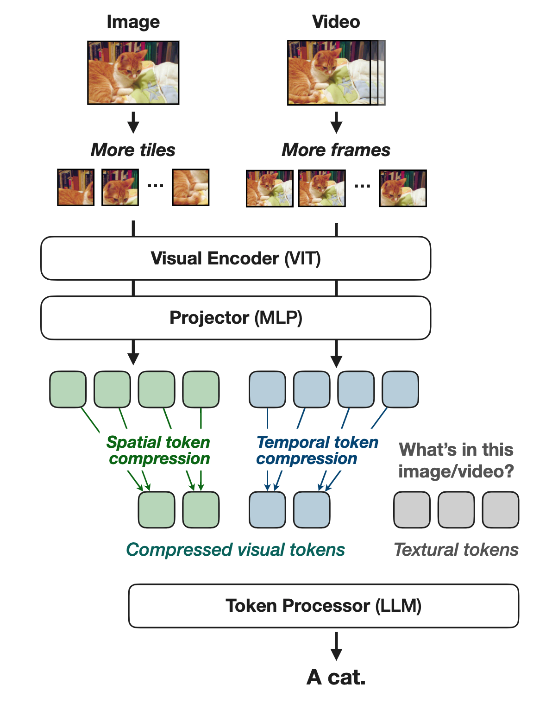
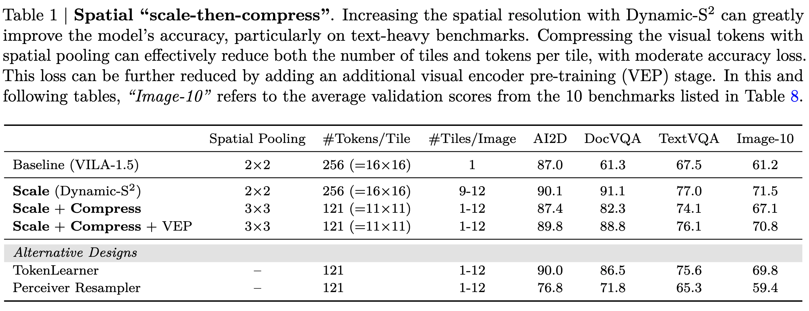
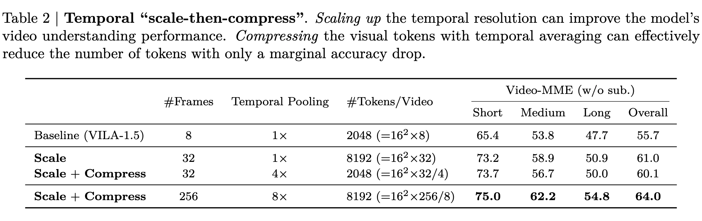
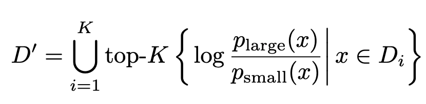
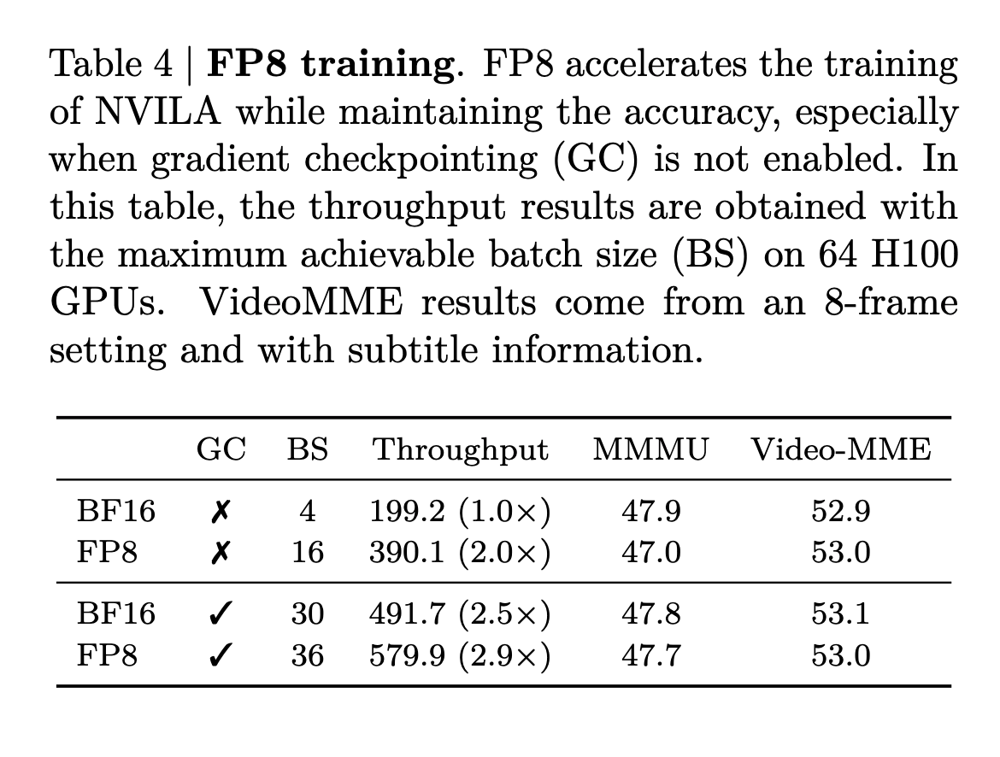
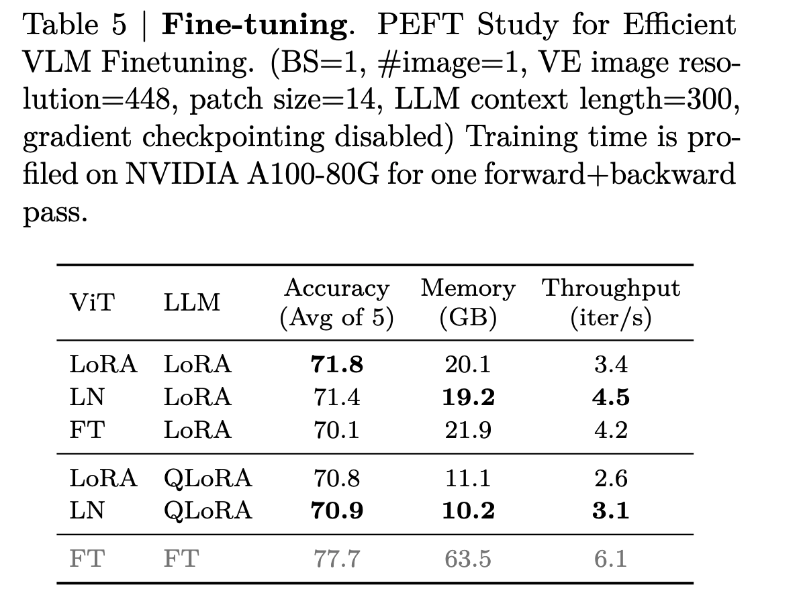
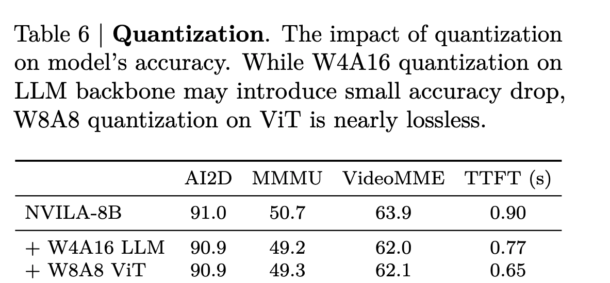
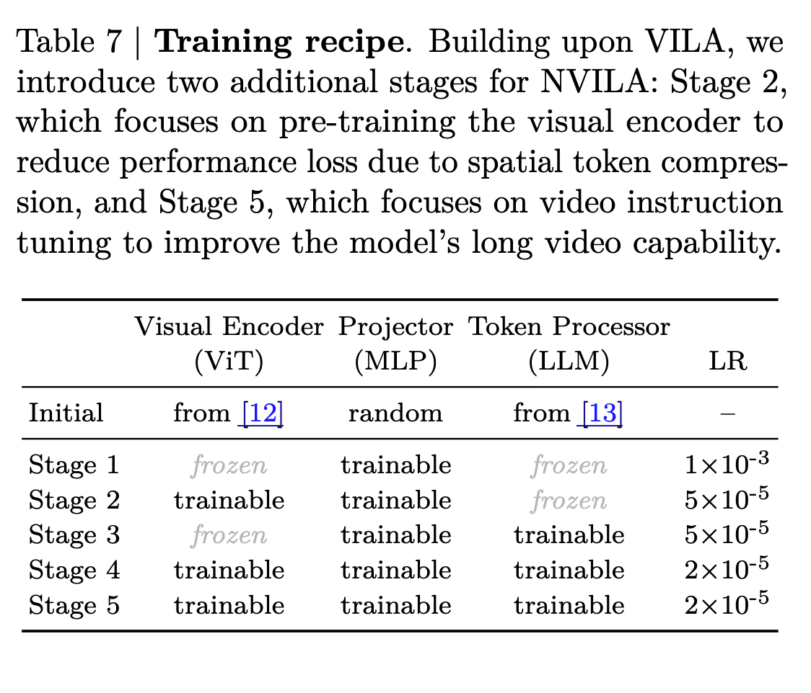
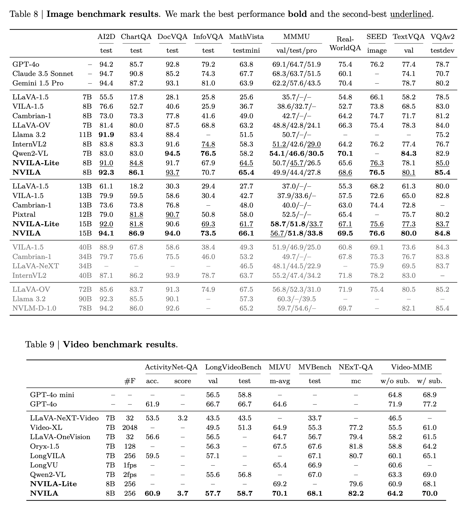

NVILA
Efficient Frontier Visual Language Models
papers
summary
research
VLMs
Can you pre-train and fine-tune your VLMs in FP8? Can you get more than 2x efficiency with some simple tricks? Nvidia presents NVILA, an efficient frontier VLM that achieves all of the above. I finished reading the paper, and here is a summary in case you are interested:

Efficient Model Architecture
- NVILA is built on top of VILA (as shown above)
- Autoregressive VLM consists of three components: SigLIP as the visual encoder that extracts features from visual inputs (e.g., images, videos). A two-layer MLP projector that aligns embeddings across visual and language modalities; and Qwen 2 as the token processor that takes visual and language tokens as input, and outputs language tokens.
- The original VILA has very limited spatial and temporal resolutions. It resizes all images to 448×448, regardless of their original size or aspect ratio, and samples up to 14 frames from videos.
- Proposes scale and then compress paradigm for both spatial and temporal tokens to improve accuracy and efficiency.
Spatial Scale-then-compress
- Inspired by the method proposed in the S2 paper that resizes images into a square resolution of the biggest size possible regardless of the original aspect ratio.
- Acknowledges the above resizing is not ideal for all images.
- To address this, the authors propose Dynamic-S2, which adaptively processes images with varying aspect ratios.
- Dynamic S2 resizes (scales up) to the size that maintains the original aspect ratio and is divisible by 448px tiles. After processing the tiles, the feature maps from all scales are interpolated to match the size of the largest scale and are concatenated.
- Higher resolution helps in increasing the accuracy but the increased resolution with an increased number of tokens increases both training and inference costs by more than 2x, as self-attention scales quadratically with the number of tokens. Hence spatial compression of tokens is required.
- A simple compression (space-to-depth op) with a window size of (2x2) is okay, but a more aggressive token drop leads to a drastic drop in accuracy. The authors hypothesize that more aggressive reductions make the projector significantly harder to train.
- To address this, they propose an additional visual encoder pre-training stage to tune the vision encoder and projectors jointly. This helps recover most of the accuracy loss from spatial token reduction, achieving a 2.4× speedup in training and inference.

Temporal “Scale-Then-Compress”
- Similar to spatial scale-the-compress but for temporal tokens.
- To scale up, they simply increased the number of frames sampled from a video. Extending the number of frames from 8 to 32 can increase the model’s accuracy on Video-MME by more than 5%
- An increased number of temporal tokens again means an increased number of visual tokens (4x in case of going from 8->32 frames). So, the authors apply compression to temporal tokens after scaling up.
- Partition the frames into groups, and then temporally pool visual tokens within each group. This works because consecutive frames are information-redundant.
- The authors found that compressing the temporal tokens by 4x leads to an acceptable drop in performance. This strategy makes NVILA-7B a SOTA model in this benchmark.

Dataset Pruning
- Follows the scale-the-compress philosophy for the dataset itself, where they scale up the SFT dataset mixture and then compress it.
- Leverages DeltaLoss to score the training set for pruning the dataset. Here \(D_i\) is the 𝑖-th subset of the full fine-tuning datasets and \(D'\) is the pruned training set. \(𝑝_{large(𝑥)}\) and \(𝑝_{small(𝑥)}\) are the output probabilities on the answer tokens.
- The motivation is to filter out examples that are either too easy or too hard.

FP8 Training
- Borrows FP8 implementation from COAT.
- Sequence lengths in VLMs can vastly vary because of different types of tokens (visual tokens, temporal tokens, and LLM tokens) as compared to sequence lengths in LLMs. Workloads with fewer tokens are generally underutilized and can benefit greatly from increasing the batch size.
- Both weights and activations are kept in FP8 precision resulting in a 2x increment in the batch size and a 2x speedup in training.
- Uses Liger kernel for CE to reduce peak memory usage due to Qwen’s large vocabulary size.

Efficient Fine-Tuning
Found some interesting things for fine-tuning/PEFT for VLMs:
- Tuning parts should be chosen depending on the downstream task (of course!)
- lr should be different for ViT and LLM
- When using PEFT, lr for ViT should be e 5-50x smaller than that for the LLM.
- Fine-tuning the vision encoder with Layernorm can achieve comparable performance to LoRA while being more computationally efficient. It can reduce the training time by 25% compared to applying LoRA for the vision encoder.

Efficient Deployment
- Two stages: Prefilling and decoding
- During prefilling, they first apply token compression techniques to reduce the inference workload for the LLM backbone. Then they implement W8A8 quantization for the vision tower to reduce NVILA’s Time-To-First-Token (TTFT) in this compute-bounded stage.
- For the decoding stage, they follow activation-aware-weight quantization (AWQ) for the W4A16 quantization of the LLM backbone. They also introduce FP16 accumulation to the W4A16 GEMM kernels, resulting in a 1.7x kernel speedup without compromising accuracy

Experimental Details
- Five-stage training pipeline
- Stages 1, 3, and 4 are also included in VILA training. The additional Stage 2 is used to recover the accuracy loss due to spatial token compression, and the additional Stage 5 helps extend the model’s long video understanding capability.
- FA2, and DeepSpeed.
- Implements functional-preserving, on-the-fly sequence packing to fuse samples with different lengths leading to an approximate 30% speedup. 128 NVIDIA H100 GPUs with a global batch size of 2048 across all stages.
- AdamW with no weight decay
- Cosine learning schedule with a linear warmup of 3% of the schedule

Results
